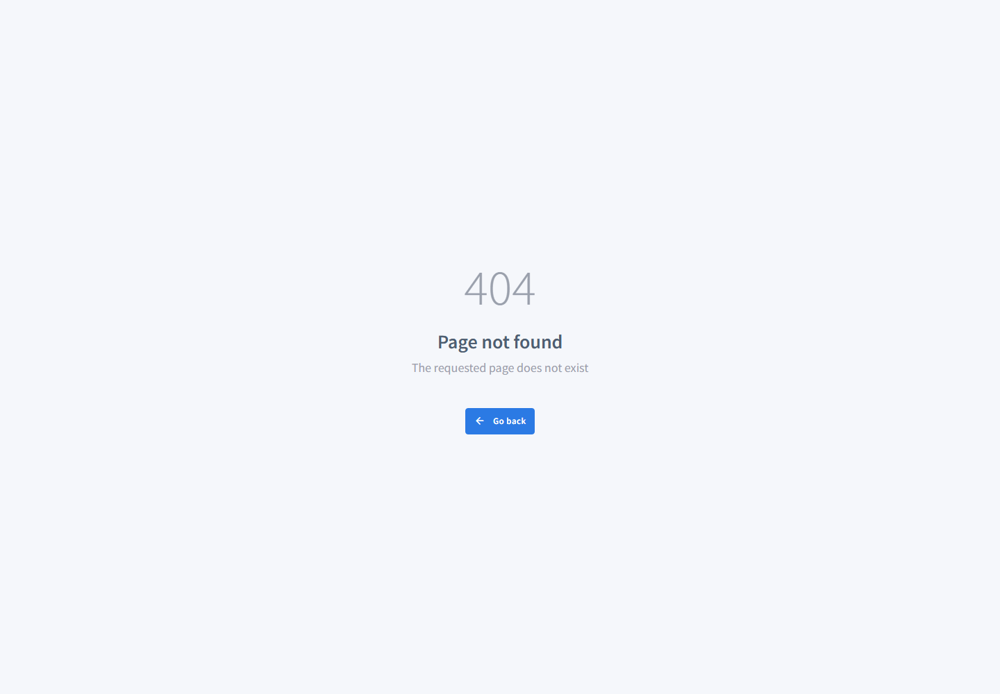

Факт
Production QA завершился без таймаута, но итоговый release decision: NO_GO. Из 15 critical steps плохие: runtime-readiness, admin-storage-validation, performance, security, analytics-runtime, full-qa, release-decision, artifact-contract.
PHP migration QA · live Confideline · 2026-05-21
Отдельная страница для Игоря и тестировщика: свежий production-прогон, факты по runtime, список исправлений, raw evidence и команды ретеста.
Production QA завершился без таймаута, но итоговый release decision: NO_GO. Из 15 critical steps плохие: runtime-readiness, admin-storage-validation, performance, security, analytics-runtime, full-qa, release-decision, artifact-contract.
Прямые live HEAD-запросы к /, /en, /ru, /en/signup вернули X-Powered-By: PHP/8.5.0. Если целевой перевод был именно на PHP 8.3, нужно проверить конфигурацию PHP-FPM/hosting pool/CDN origin.
Публичный browser smoke desktop/mobile прошел. Базовые маршруты home/login/signup/recovery/legal отдают 200 в full QA. Node, npm, Playwright и локальные source-level PHP lint checks доступны.
Admin routes в текущем storage state отдают 404, axe WCAG падает на public routes, human desktop journey превышает latency threshold, Docker daemon не готов для k6/ZAP, analytics runtime не доказан.
/en, /en/login, /en/signup, recovery и legal pages открываются с 200./en все еще имеет title Welcome to YouDate!.Strict-Transport-Security, X-Frame-Options, X-Content-Type-Options, Referrer-Policy.Это не один баг после PHP-обновления, а набор разных контуров: runtime version mismatch, live routing/admin access, live public UI/accessibility, deploy-sync gap, analytics proof gap и локальные performance/security tooling blockers.
5000 ms ради зеленого теста.| Приоритет | Статус | Зона | Факт | Что поправить | Как ретестить |
|---|---|---|---|---|---|
| P0 | FAIL | PHP/runtime route | Live отвечает X-Powered-By: PHP/8.5.0, не PHP 8.3. |
Проверить реальный PHP handler для домена: hosting PHP selector, PHP-FPM pool, nginx/apache proxy, CDN origin. Зафиксировать, целевая версия 8.3 или 8.5. | Повторить HEAD/GET для /, /en, /ru, /en/signup; сверить X-Powered-By и серверный phpinfo/CLI только в безопасном закрытом контуре. |
| P0 | FAIL | Admin access | /en/admin, /en/admin/user/index, /en/admin/message/index, /en/admin/settings/index, /en/admin/settings/role отдают 404 даже с текущим storage state. |
Проверить, изменился ли admin prefix/route после обновления PHP или слетела авторизация storage-state. Если admin route действительно скрыт новым путем, обновить тестер и handoff URL; если нет, чинить routing/web server rewrite. | После фикса запустить Invoke-ConfidelineBrowserQa.ps1 -SkipInstall и Inspect-ConfidelineAdminSurface.ps1; artifact-contract должен перестать ругаться на missing passing route. |
| P0 | BLOCKED | Admin role coverage | Default и super-admin storage files существуют, но moderator storage-state отсутствует; role-aware admin gate заблокирован. | Через capture flow сохранить gitignored moderator storage-state. Если login/MFA требуется, выполнить через обычный human login handoff, без передачи паролей в файлы/чат. | Ретест: Invoke-ConfidelineBrowserQa.ps1 -SkipInstall. Готово, когда BROWSER-ADMIN-001 и ADMIN-ROLE-AWARE-001 не BLOCKED. |
| P0 | FAIL | Accessibility | Axe WCAG упал на 6/6 public checks: /en, /en/login, /en/signup desktop/mobile. |
На /en: добавить accessible name для button[data-dismiss="alert"], поправить contrast для .container > a, .btn-male, .btn-female. На login/signup: contrast для request/resend/buttons/terms links, различимость links in text block. |
Запустить browser QA или точечно Playwright accessibility spec; ожидаемый результат: empty axe summary по всем 6 checks. |
| P0 | WARN | Deploy sync | Source-level fixes для accessibility, branding, security headers и analytics bridge найдены, но live QA продолжает видеть старые public findings. | Проверить, что именно развернуто на live: deploy bundle, source sync manifest, hosting document root, кеш/CDN. Закрывать live findings только после реального deploy/sync и повторного QA. | Ретест: full production QA. Готово, когда DEPLOY-SYNC-001 не WARN и live checks подтверждают исправления. |
| P1 | WARN | Human journey / performance | Desktop human-paced journey упал: home domcontentloaded занял 6615 ms при пороге 5000 ms. Mobile в том же сценарии прошел. |
Проверить server response, first route load, кеширование, тяжелые assets и CDN/origin latency. Не ослаблять порог теста, пока нет route-level evidence. | После оптимизации повторить Invoke-ConfidelineBrowserQa.ps1 -SkipInstall; отдельно разблокировать k6, чтобы подтвердить p95 не единичным Playwright замером. |
| P1 | BLOCKED | Performance/Security gates | k6 и ZAP baseline не запущены: Docker CLI есть, но daemon недоступен. | Поднять Docker Desktop daemon или установить локальные k6/ZAP CLI без контейнерного fallback. Это tooling blocker, не доказанный продуктовый баг. | Запустить Invoke-ConfidelinePerformanceQa.ps1 и Invoke-ConfidelineSecurityPassiveQa.ps1; статус должен быть PASS/WARN с реальными находками, не BLOCKED. |
| P1 | WARN | Analytics runtime | Schema готова, но runtime не доказан: analytics requests = 1, client events = 2, matched expected events = 0, qualified event beacons = 0. | Проверить реальное срабатывание launch events в браузере, порядок событий и qualified beacons. Нельзя считать paid validation измеримой только по schema/source proof. | Запустить Invoke-ConfidelineAnalyticsRuntimeQa.ps1 -SkipInstall; закрывать только при overall=RUNTIME_PROVEN. |
| P2 | WARN | Brand/security headers | Full QA видит legacy YouDate branding в title и неполные baseline security headers. | Синхронизировать Confideline branding/security hooks на live или документировать исключение. Проверить, какие headers должны идти из Yii2, веб-сервера или Cloudflare. | Повторить full QA; закрывать только когда BRAND-001 и SEC-HEADERS-001 стали PASS или явно приняты как исключение. |
| Пункт | Evidence | Почему это доказательство |
|---|---|---|
| Версия PHP на live | latest-report.json -> SEC-HEADERS-001.headers.X-Powered-By и direct HEAD probe |
Это текущий HTTP response с live https://confideline.com/en, а не локальная настройка. |
| Admin route 404 | admin-surface-inspection.json, admin screenshot, admin gated output | Проверены конкретные URL; получен 404 Page not found, admin menu не найден. |
| A11Y FAIL | playwright-accessibility-output.txt | Axe вернул конкретные rules и targets: button-name, color-contrast, link-in-text-block. |
| Human journey latency | playwright-human-journey-output.txt | Desktop home domcontentloaded измерен как 6615 ms при допустимом 5000 ms. |
| Analytics NOT_PROVEN | analytics-runtime-summary.md | Browser route загрузился, но matched expected events = 0, qualified event beacons = 0. |
| Release NO_GO | release-decision.md, production-readiness.md | Решение собрано из latest QA, coverage matrix, repair cards, analytics runtime и blockers, а не из одного красного теста. |
confideline-production-qa-20260521-160149337.05sFAILNO_GO37376Не запускать paid validation traffic и не заявлять release-ready, пока release decision остается NO_GO, analytics runtime NOT_PROVEN, а admin/performance/security gates не закрыты.
Скрин подтверждает не просто auth gap, а конкретный live ответ 404 Page not found на /en/admin в admin-surface inspection.

| Цель | Команда | Готово когда |
|---|---|---|
| Полный production QA | powershell -NoProfile -ExecutionPolicy Bypass -File H:\GPT-Codex\Confideline\qa-ba-autonomous-tester\scripts\Invoke-Testirovshchik.ps1 -Mode Production -Json -StepTimeoutSeconds 240 |
productionReady=true, releaseDecision=GO или принятый WARN-only state. |
| Browser/admin/a11y retest | powershell -NoProfile -ExecutionPolicy Bypass -File H:\GPT-Codex\Confideline\qa-ba-autonomous-tester\scripts\Invoke-ConfidelineBrowserQa.ps1 -SkipInstall |
Public smoke, human journey, accessibility и admin gates не FAIL/BLOCKED. |
| Runtime readiness | powershell -NoProfile -ExecutionPolicy Bypass -File H:\GPT-Codex\Confideline\qa-ba-autonomous-tester\scripts\Test-ConfidelineQaRuntime.ps1 |
Нет FAIL; Docker/tooling warnings либо исправлены, либо явно исключены из текущего scope. |
{kind=link}